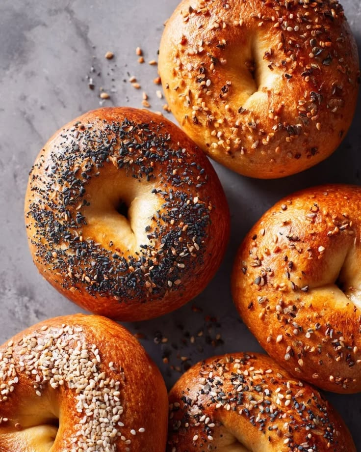
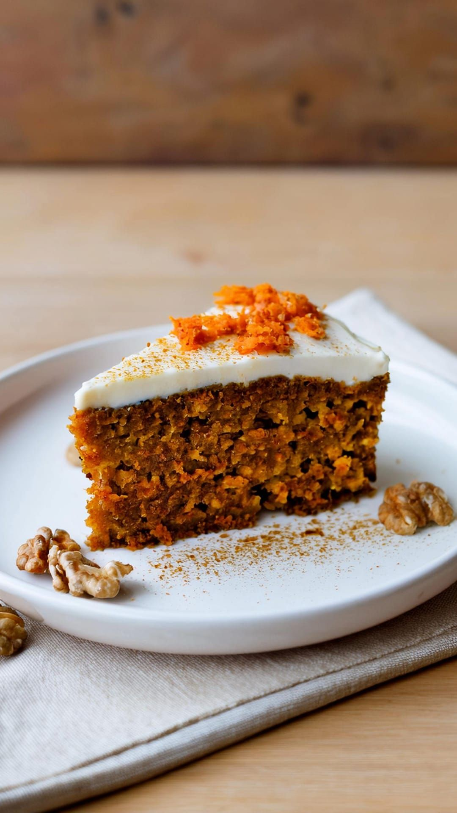
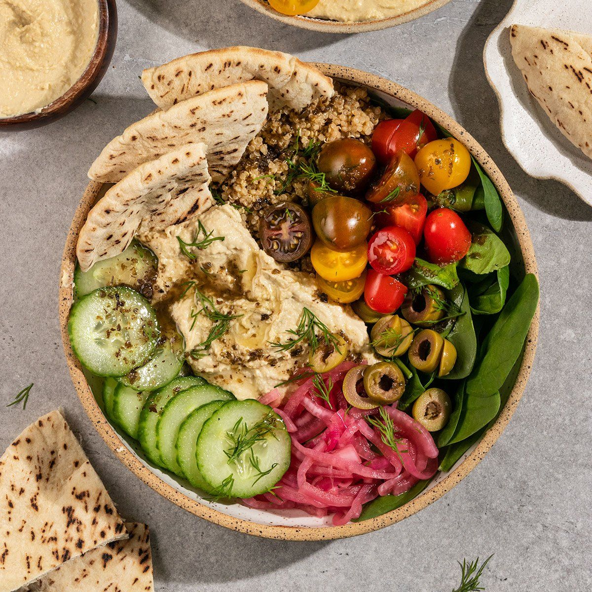
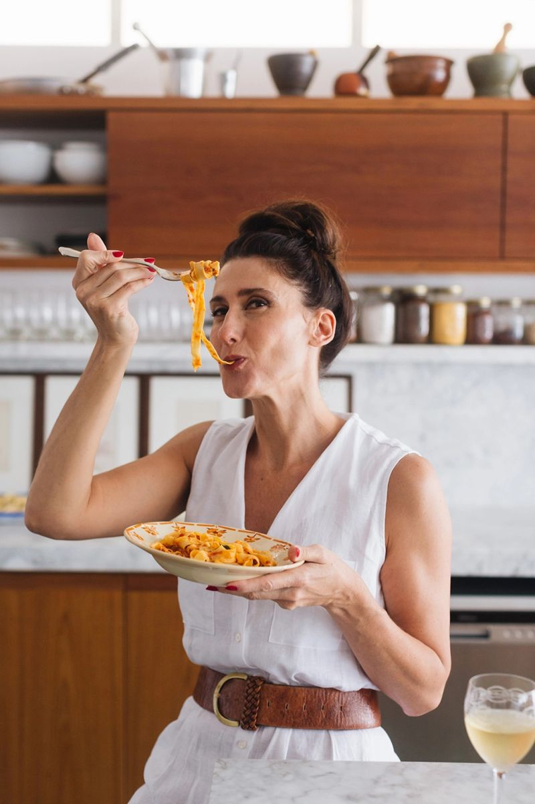
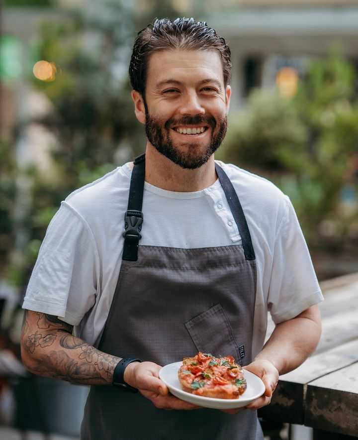
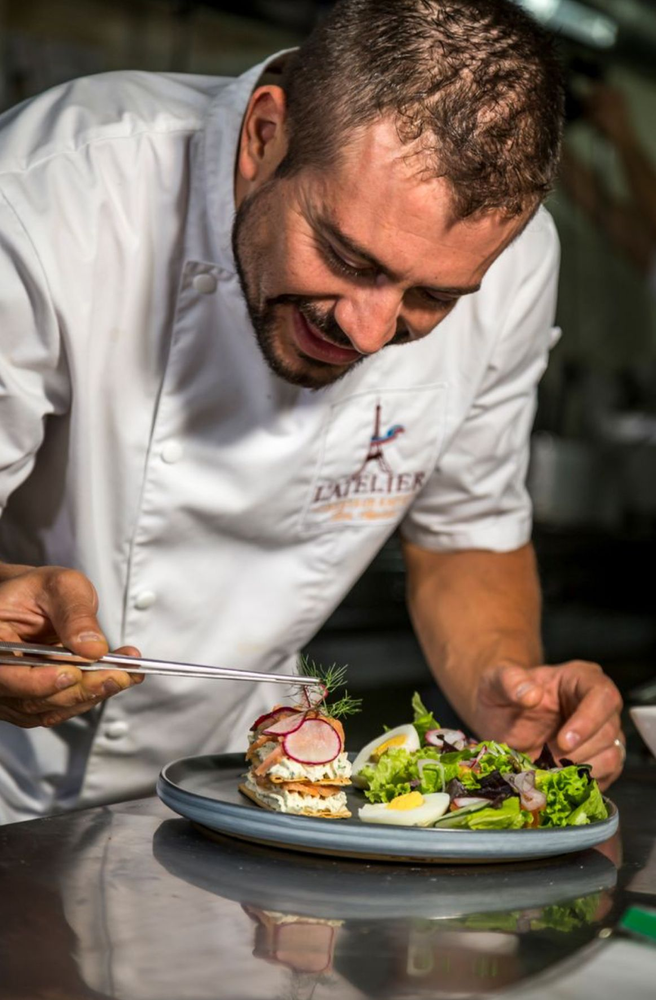
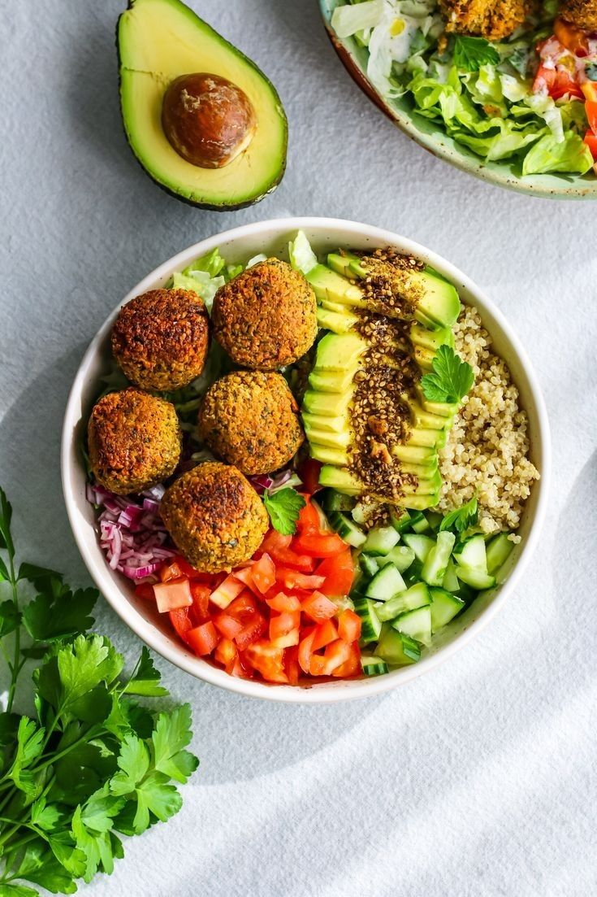

Panadería Vegana Artesanal
📋 4 lecciones
🕒 4 horas

📋 4 lecciones
🕒 4 horas

📋 6 a 8 lecciones
🕒 4 horas

📋 5 lecciones
🕒 3 horas
Nuestro equipo de profesionales que nos acompañan

Chef general, especialista en alta cocina basada en plantas. Su enfoque se centra en transformar ingredientes nobles en experiencias gourmet, fusionando técnicas clásicas con la frescura de lo natural.

Ayudante, el maestro de la experimentación y las texturas. Su especialidad es el desarrollo de fermentos y panes artesanales, aportando ese toque rústico y auténtico que define nuestra propuesta.
Chef general
Especialista en alta cocina basada en plantas. Su enfoque se centra en transformar ingredientes nobles en experiencias gourmet, fusionando técnicas clásicas con la frescura de lo natural.
Ayudante
El maestro de la experimentación y las texturas. Su especialidad es el desarrollo de fermentos y panes artesanales, aportando ese toque rústico y auténtico que define nuestra propuesta.

Chef general
Experto en cocina mediterránea y de autor. Se destaca por su habilidad para equilibrar sabores intensos y especiados, creando platos que cuentan historias a través de productos de estación.
Nuestras recetas que se siguen eligiendo todos los días, aprobadas por nutricionistas y especialistas.


